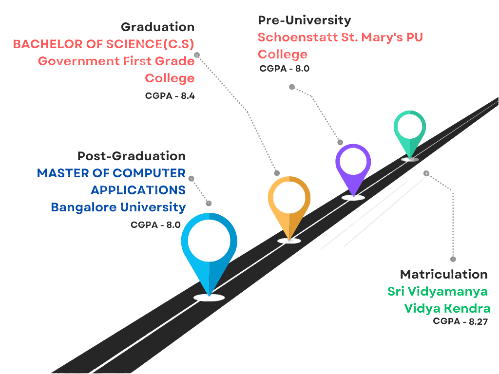

Hi, I am Sahana R
and I am a passionate

About Me
As a passionate MCA student with an enthusiastic interest in
web development, I am eager to explore and implement innovative solutions to tackle real-world
problems through technology. From building functional solutions like a
Participating in academic projects has given me a taste of
the diverse applications of my skills to web development.
My
diverse skill set, which includes
web development,
is backed by practical experience in event management Through these experiences,
I have built a strong foundation and am committed to expanding my knowledge further.
My practical experience in event management and team collaboration
has honed my ability to thrive in dynamic environments,
and I am excited to leverage my growing skills to contribute effectively to organizations and team leadership.
Education

Languages and technologies known